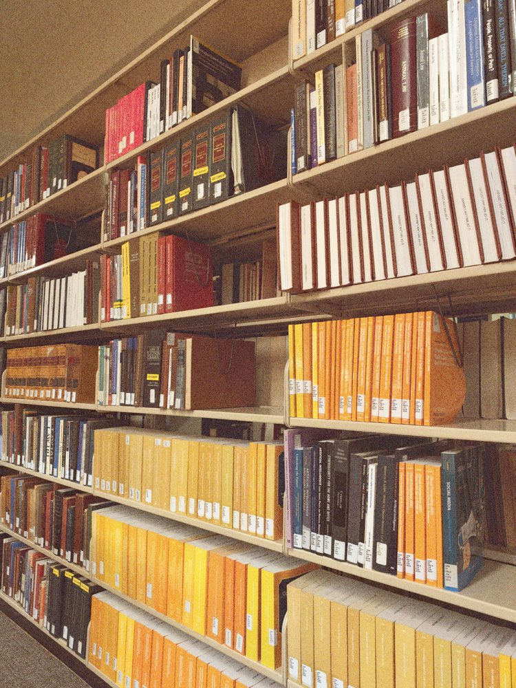
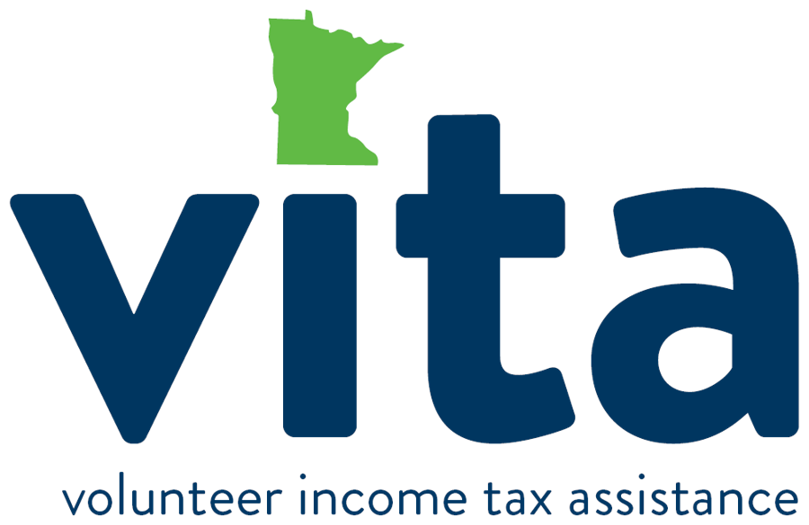

“The more that you read, the more things you will know. The more that you learn, the more places you’ll go.”
Here is a collection of my professional and leadership experience, as well as some projects!

Professional
-
Incoming Tax Intern KPMG Minneapolis, Minnesota Winter 2028
I’ll be joining KPMG’s Minneapolis office as a Tax Intern in Winter 2028!
I am excited for the opportunity to expereince public accounting and tax!
-
Audit Intern Fuyao Automotive North America Plymouth, Michigan May 2026 – August 2026
I was an audit intern on FANA's finance team. I mainly supported the month-end close, helped with reconciliations, accruals and financial statement preparation.
My main focus was product costing and inventory valuation. I used Excel models (XLOOKUP, PivotTables, SUMIFS, Crossreferencing) for automotive glass costs, traced yield variances back to their cause, and reviewed about 75 PO's a week in Oracle ERP.
I also got exposure to managerial accounting (Contribution Income Statement, Segment margin, Costing Accounting) and saw how a subsidiary’s statements consolidate into the parent group.
-
Development Coach Mandarin Badminton Markham, Ontario, Canada January 2023 – August 2025

As a beginner, Senior players often coached me or offered me advice. I would not have achieved the results I did had it not been for them. This was a way for me to pay it forward.
I coached junior players at the club ranging from provincial level to national and Pan Am medalists. I offered real-time technical and tactical feed back during sparring sessions, and led training sessions to help players prepare for tournaments.
Leadership & Activities
-
President Minnesota Badminton Minneapolis, Minnesota January 2026 – Present

I lead a 501(c)(3) nonprofit growing badminton across Minnesota. As the president, I am running board meetings, delegating, and ensuring events aligned with our mission and goal
I plan the Minnesota Open (300+ players, $30K+ budget) and track expenses and participation data in Excel to guide future planning.
-
Income Tax Volunteer NoRTH / VITA Minneapolis, Minnesota October 2026 – Present

VITA (Volunteer Income Tax Assistance) is an IRS program that offers free tax return preparation to people who qualify.
I’m currently completing the training to become a certified volunteer, and I’ll be helping prepare returns during the 2027 tax season.
-
Junior National Team Member Badminton Canada Ottawa, Canada May 2018 – August 2026

I spent nine years on Canada’s junior national team and was ranked No. 1 nationally in doubles and mixed doubles. I achieved 9 Pan American Junior podium finishes (2 Gold, 4 Silver, 3 Bronze) and a Top 32 finish at the BWF World Junior Championships.
Badminton Canada ↗ Pan Am Juniors 2019 ↗ Pan Am Juniors 2023 ↗ Team Canada 2024 ↗
Projects
A lot of these Excel files are protected, so they aren’t posted here. To learn more about any of them, feel free to email me!
-
Excel · ACCT 5101
EDGAR Search Project
-
Excel
Forecasting Schedule
-
Excel
Inventory Analysis
-
Excel
Manufacturing Cost Variance Analysis
-
Excel
Budget Planner